Google DeepMind의 게노믹스 AI 모델을 활용한 체계적 학습 가이드
11 Modules · Interactive Quizzes · Hands-on CodeAlphaGenome은 Google DeepMind가 개발한 대규모 게노믹스 AI 모델입니다. DNA 서열을 입력받아 유전자 발현, 크로마틴 접근성, 전사인자 결합, 3D 염색체 구조 등 다양한 게노믹스 특성을 예측합니다.
| OutputType | 설명 | Human Tracks | Mouse Tracks |
|---|---|---|---|
| ATAC | ATAC-seq 크로마틴 접근성 | 167 | 18 |
| CAGE | 전사 시작점 (TSS) 활성 | 546 | 188 |
| DNASE | DNase-seq 크로마틴 접근성 | 305 | 67 |
| RNA_SEQ | 유전자 발현 (RNA-seq) | 667 | 173 |
| CHIP_HISTONE | 히스톤 변형 ChIP-seq | 1,116 | 183 |
| CHIP_TF | 전사인자 ChIP-seq | 1,617 | 127 |
| SPLICE_SITES | 스플라이싱 부위 확률 | 4 | 4 |
| SPLICE_SITE_USAGE | 조직별 스플라이싱 사용빈도 | 734 | 180 |
| SPLICE_JUNCTIONS | 스플라이싱 접합 예측 | 367 | 90 |
| CONTACT_MAPS | 3D 염색체 접촉 지도 | 28 | 8 |
| PROCAP | 초기 전사 (PRO-cap) | 12 | - |
Q1. AlphaGenome의 최대 입력 DNA 서열 길이는?
Q2. AlphaGenome이 지원하는 OutputType 개수는?
RNA_SEQ는 AlphaGenome의 핵심 OutputType 중 하나로, 유전자 발현 수준을 예측합니다. 가장 중요한 특징은 가닥 특이적(strand-specific) 예측을 수행한다는 점입니다.
센스 가닥의 전사 활성을 예측합니다. 양의 가닥에서 발현되는 유전자의 신호를 포착합니다.
안티센스 가닥의 전사 활성을 예측합니다. 반대 방향으로 전사되는 유전자를 식별합니다.
CYP2B6는 약물 대사에 관여하는 중요한 효소를 코딩하는 유전자로, chr19에 위치합니다. 이 예제에서는 CYP2B6 영역의 RNA_SEQ 예측을 수행합니다.
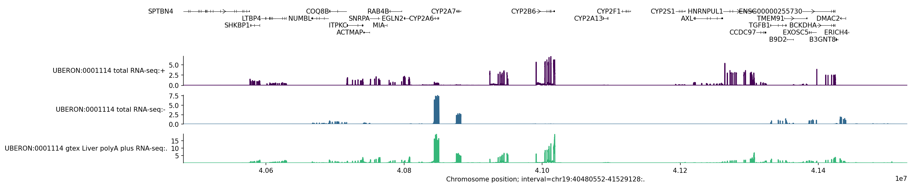
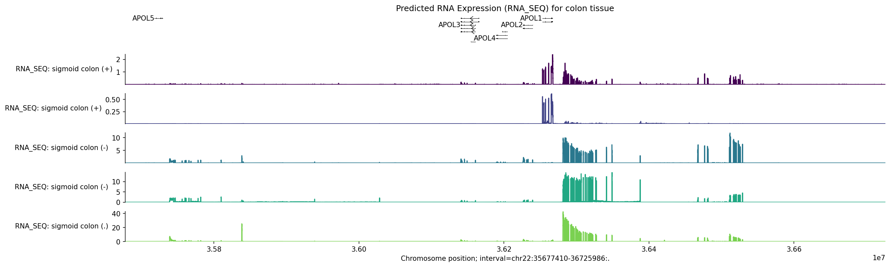
Q1. RNA_SEQ의 가닥 특이적 예측이 중요한 이유는?
Q2. Human RNA_SEQ 트랙 수는?
CAGE는 mRNA의 5' 캡 구조를 포착하여 전사 시작점(TSS)을 정밀하게 매핑하는 기술입니다. FANTOM 프로젝트에서 수백 종의 세포/조직에서 CAGE 데이터를 생산했으며, AlphaGenome은 이를 학습하여 TSS 활성을 예측합니다.
| 특성 | CAGE | RNA_SEQ |
|---|---|---|
| 측정 대상 | 전사 시작점 (5' end) | 전체 전사체 |
| 해상도 | 단일 염기 수준 | 전체 유전자 영역 |
| 용도 | 프로모터 활성, TSS 식별 | 유전자 발현량 |
| Human Tracks | 546 | 667 |
| Mouse Tracks | 188 | 173 |
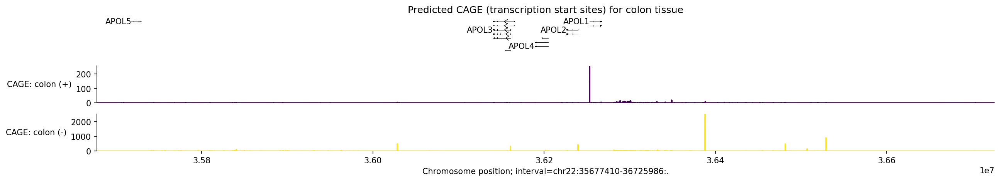
Q1. CAGE가 주로 측정하는 것은?
Q2. CAGE와 RNA_SEQ의 핵심 차이는?
크로마틴 접근성(Chromatin Accessibility)은 DNA가 히스톤 단백질로부터 얼마나 풀려있는지를 나타냅니다. 열린 크로마틴 영역은 전사인자가 결합할 수 있는 조절 요소(프로모터, 인핸서 등)를 나타내며, 유전자 발현 조절의 핵심입니다.
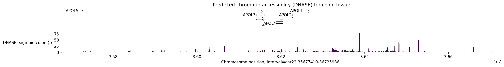
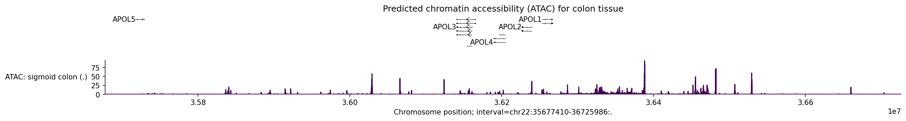
Q1. 열린 크로마틴 영역이 중요한 이유는?
Q2. DNASE와 ATAC의 Human 트랙 수 조합은?
히스톤 변형(Histone Modification)은 히스톤 단백질의 꼬리에 화학적 변형(메틸화, 아세틸화 등)이 일어나는 것입니다. 이러한 변형은 에피게놈 코드로 작용하여 유전자 발현을 조절합니다.
| 히스톤 마크 | 위치/기능 | 생물학적 의미 |
|---|---|---|
| H3K4me3 | 활성 프로모터 | 전사 시작점 표지, 유전자 활성화 |
| H3K27ac | 활성 인핸서/프로모터 | 활성 조절 요소 표지 |
| H3K36me3 | 유전자 본체(gene body) | 활발한 전사 표지 |
| H3K27me3 | 억제된 영역 | Polycomb 억제, 발생 유전자 조절 |
| H3K9me3 | 이질 크로마틴 | 반복 서열 억제, 구조적 이질크로마틴 |
| H3K4me1 | 인핸서 (활성/준비) | 인핸서 표지, H3K27ac와 함께 활성 여부 판단 |
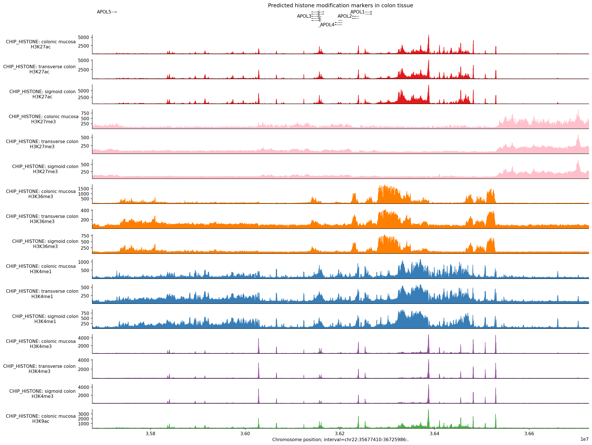
여러 히스톤 마크를 조합하면 게놈의 기능적 상태를 추론할 수 있습니다:
Q1. 활성 프로모터를 나타내는 히스톤 마크는?
Q2. CHIP_HISTONE의 Human 트랙 수는?
CHIP_TF는 AlphaGenome의 OutputType 중 가장 많은 트랙(1,617)을 보유합니다. 이는 수백 종의 전사인자(TF)가 다양한 세포주에서 측정되었기 때문입니다.
만성 골수성 백혈병 세포주. 약 269개 전사인자의 결합 데이터가 있습니다. 혈액 계통 특이적 TF 연구에 핵심적입니다.
간세포암 세포주. 약 501개 전사인자의 결합 데이터가 있습니다. 간 특이적 유전자 조절 연구의 중심 모델입니다.
CTCF와 RAD21(cohesin 구성요소)은 게놈 전체에서 높은 빈도로 공동 위치화됩니다. 이 패턴은 TAD(Topologically Associating Domain) 경계를 형성하며, 3D 염색체 구조를 결정하는 핵심 요소입니다.
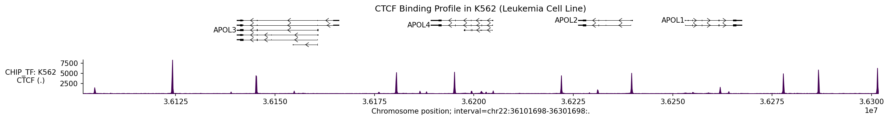
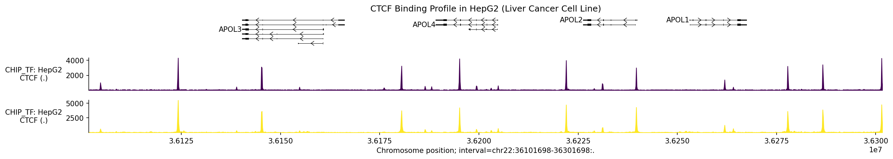
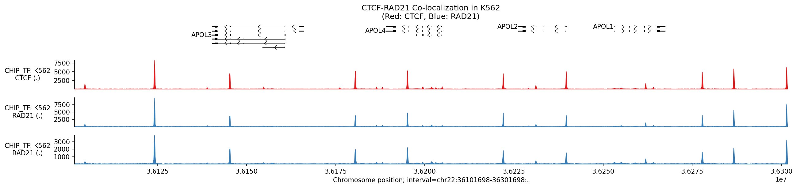
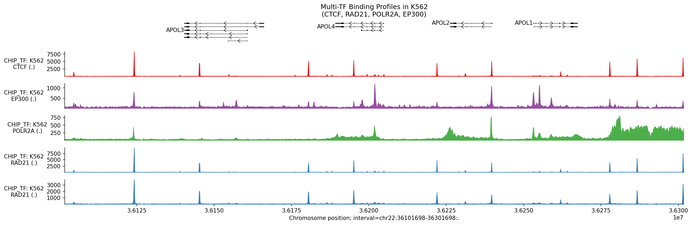
Q1. CHIP_TF가 가장 많은 트랙을 가진 이유는?
Q2. CTCF-RAD21 공동 위치화의 생물학적 의미는?
AlphaGenome은 스플라이싱을 3가지 관점에서 예측합니다. 이는 스플라이싱의 다층적 특성을 반영합니다.
조직 비의존적(tissue-agnostic) 스플라이싱 부위 확률을 예측합니다. 4개 트랙은 다음과 같습니다:
조직 특이적 스플라이싱 사용 빈도를 예측합니다. 같은 스플라이싱 부위라도 조직에 따라 사용 빈도가 다릅니다.
예를 들어, 특정 엑손이 뇌 조직에서는 포함되지만 간 조직에서는 건너뛰어지는 대안적 스플라이싱(alternative splicing) 패턴을 예측할 수 있습니다.
스플라이싱 접합(junction) 수준의 예측으로, sashimi plot 스타일의 시각화에 사용됩니다.
접합 읽기(junction reads)를 예측하여, 어떤 엑손-엑손 조합이 실제로 사용되는지 정량적으로 분석할 수 있습니다.
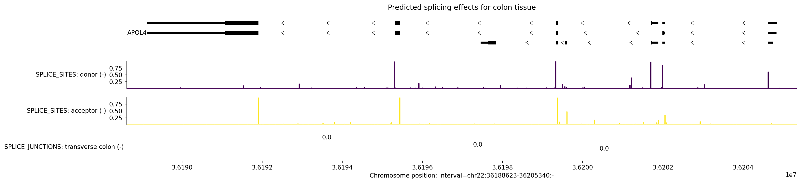
Q1. SPLICE_SITES의 트랙 수가 4개인 이유는?
Q2. 조직별 스플라이싱 패턴 차이를 분석하려면 어떤 OutputType을 사용해야 하는가?
Q3. SPLICE_JUNCTIONS의 Human 트랙 수는?
DNA는 세포핵 안에서 복잡한 3차원 구조를 형성합니다. 선형 거리상 멀리 떨어진 영역이 3D 공간에서는 가까이 접촉할 수 있으며, 이러한 접촉은 유전자 발현 조절에 핵심적입니다. 예를 들어, 인핸서가 프로모터와 물리적으로 가까워지면 유전자가 활성화됩니다.
TAD는 게놈이 구조적으로 구획화된 영역으로, TAD 내부의 DNA 접촉 빈도가 TAD 경계를 넘는 접촉 빈도보다 훨씬 높습니다. TAD 경계는 주로 CTCF-RAD21(cohesin) 복합체에 의해 형성됩니다.
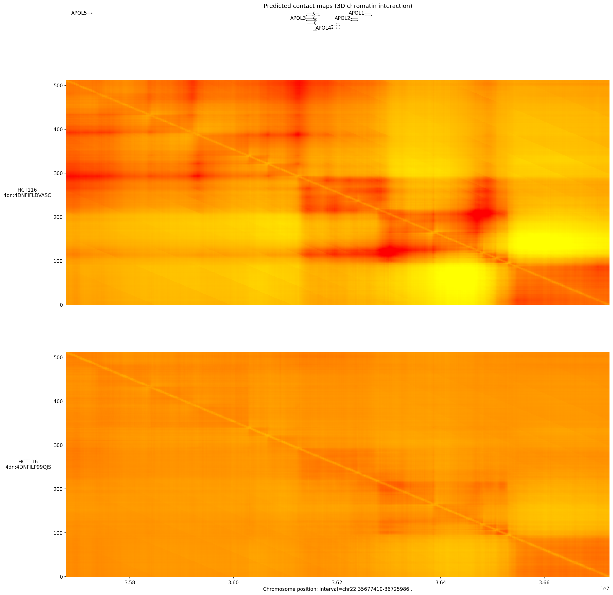
Q1. CONTACT_MAPS의 해상도는?
Q2. TAD 경계를 형성하는 핵심 단백질 복합체는?
PROCAP(PRO-cap)은 초기 전사(nascent transcription)를 측정하는 기술로, RNA Polymerase II가 전사를 시작한 직후 일시 정지(pausing)하는 위치를 매핑합니다. CAGE가 성숙한 mRNA의 5' end를 측정하는 것과 달리, PROCAP은 아직 처리되지 않은 초기 RNA를 포착합니다.
RNA Pol II는 전사 시작 후 +20~+60 bp 위치에서 일시 정지합니다. 이 pausing은:
| 특성 | CAGE | PROCAP |
|---|---|---|
| 측정 대상 | 성숙 mRNA 5' cap | 초기 RNA (nascent) |
| 포착 시점 | 전사 완료 후 | 전사 시작 직후 |
| 주요 정보 | 안정적 TSS 활성 | Pol II pausing 위치 |
| Human Tracks | 546 | 12 |
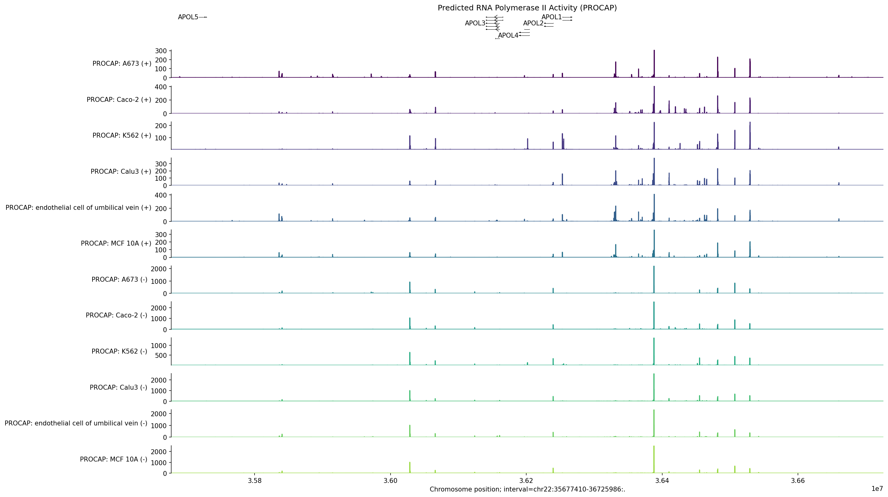
Q1. PROCAP이 측정하는 것은?
Q2. PROCAP 트랙에 포함된 세포주 수는?
AlphaGenome은 DNA 변이(SNV, InDel)가 다양한 게노믹 특성에 미치는 효과를 정량적으로 예측합니다. RECOMMENDED_VARIANT_SCORERS에 19가지 스코어러가 포함되어 있습니다.
predict_variant()를 사용하여 개별 변이의 효과를 예측합니다. 결과는 VariantOutput 객체로 반환됩니다.
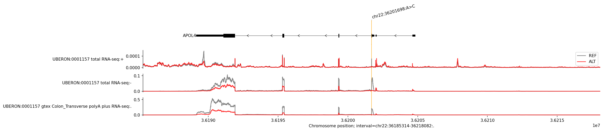
복수의 변이를 한 번에 스코어링하여 대규모 분석을 수행합니다.
특정 영역의 모든 가능한 단일 염기 변이를 체계적으로 평가합니다.
| Scorer | 적용 OutputType | 방법 |
|---|---|---|
| GeneMaskLFCScorer | RNA_SEQ, CAGE, PROCAP | 유전자 단위 log fold change |
| CenterMaskScorer | DNASE, ATAC, CHIP_HISTONE, CHIP_TF | 변이 중심 영역의 효과 측정 |
| SpliceSitesScorer | SPLICE_SITES | 스플라이싱 확률 변화 측정 |
Q1. GeneMaskLFCScorer가 적용되는 OutputType은?
Q2. ISM 64bp 윈도우에서 생성되는 변이 수는?
Q3. RECOMMENDED_VARIANT_SCORERS에 포함된 scorer 수는?
TAL1은 T세포 급성 림프구성 백혈병(T-ALL)에서 중요한 종양유전자입니다. 이 워크플로우에서는 종양 유발 변이와 배경 변이를 비교 분석합니다.
AlphaGenome 트랙은 표준화된 온톨로지로 주석이 달려 있어, 특정 세포 유형이나 조직에 해당하는 트랙을 정확히 필터링할 수 있습니다.
| 온톨로지 | 항목 수 | 설명 |
|---|---|---|
| CL (Cell Ontology) | 1,394 | 세포 유형 |
| CLO (Cell Line Ontology) | 65 | 세포주 |
| EFO (Experimental Factor) | 2,402 | 실험 조건/세포주 |
| NTR (New Term Request) | 93 | 신규 용어 |
| UBERON | 1,605 | 해부학적 구조/조직 |
| 총 Human Terms: 5,559 | ||
대규모 변이 분석에는 CLI(Command Line Interface) 기반 워크플로우가 효율적입니다.
Q1. TAL1 분석에서 총 변이 수와 종양 유발 변이 수는?
Q2. Human 트랙의 총 온톨로지 term 수는?